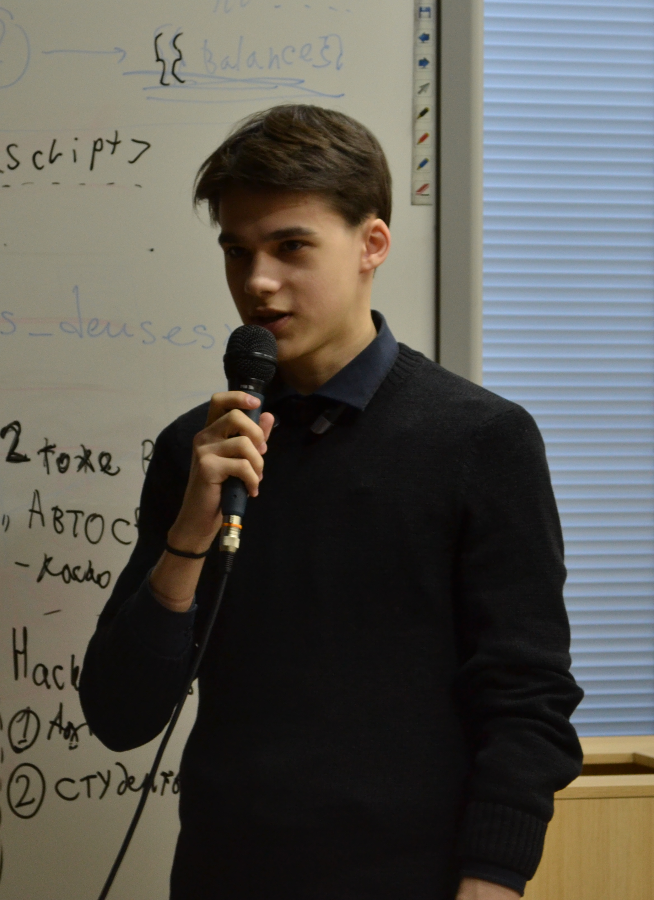

Нурислам Зарипов
- 3 Июля, 1999 (19 лет)
- Казань
- +7 (927) 433-16-52
- nurislam.zaripov.1999@gmail.com
- @scaleflake

Интересные области и направления
-
Decentralized systems, cryptography:
-
Big data and machine learning:
-
Алгоритмы, оптимизация, алгоритмы оптимизации:
-
Other:
Навыки и технологии
- Front-end: JS, HTML, CSS, jQuery, AJAX
- Node.js, express.js, Electron
- C++, STL
- OpenGL, GLSL
- Python, Tensorflow, Keras, Matplotlib, Numpy
- Linux, Git
Опыт работы
-
dApp-программист (фронтенд и умные контракты), 03/2018 - 06/2018
ООО "Современные технологии", Казань, Россия
- Программирование логики смарт-контрактов для Ethereum на языке программирования Solidity
- Дизайн и разработка веб-интерфейса децентрализованного приложения
Личные проекты